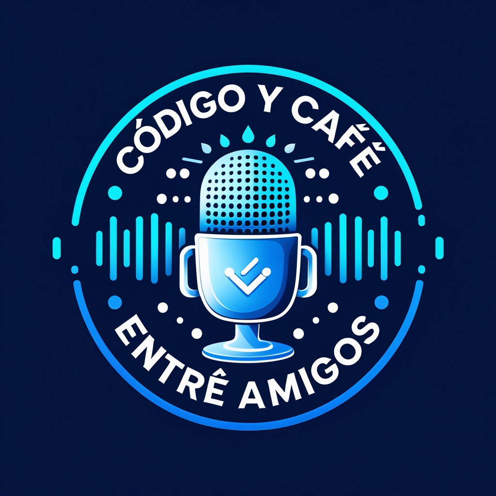

Linux vs. Windows
Ventajas, diferencias y cómo elegir un entorno que se adapte a tu forma de trabajar.
Podcast en preparación
Tecnología, desarrollo y diseño conversados entre amigos: sin tecnicismos innecesarios, con experiencias honestas y una buena taza de café.

Lo que viene
Ideas, dudas y debates para aprender juntos, episodio a episodio.
Ventajas, diferencias y cómo elegir un entorno que se adapte a tu forma de trabajar.
Dos caminos, muchas posibilidades: descubre dónde encajan tus intereses.
Por qué una buena experiencia puede convertir una herramienta en algo memorable.
Lo que está cambiando en nuestra manera de crear, programar y aprender.
Conceptos y herramientas de nube explicados desde la práctica cotidiana.
Experiencias, aprendizajes y consejos para dar el siguiente paso profesional.
Las voces detrás del café
Personas distintas, una misma curiosidad por entender y compartir lo que ocurre en tecnología.
Apasionado por la tecnología y la conversación sin filtro. Convierte cada episodio en una mezcla de aprendizaje, humor y curiosidad.
Soñadora digital, amante del café y de los proyectos creativos. Le interesa la historia que existe detrás de cada línea de código.
Siempre listo para debatir y compartir conocimientos. Disfruta convertir temas complejos en conversaciones fáciles de entender.
Busca el equilibrio entre programación, sistemas y buen humor. Aporta soluciones prácticas desde diferentes perspectivas.
Entusiasta de la programación y de las conversaciones profundas sobre innovación, aprendizaje y futuro.
Nuestra idea
Creemos que las mejores conversaciones nacen entre amigos y con una buena taza de café. Este podcast busca acercar el desarrollo de software de una forma sencilla, entretenida y cercana, tanto para quienes están empezando como para quienes ya forman parte de la comunidad.
Únete a la conversación
Escríbenos. Nos encantará leer tus preguntas, propuestas o historias relacionadas con tecnología.
codigo-y-cafe@proton.me